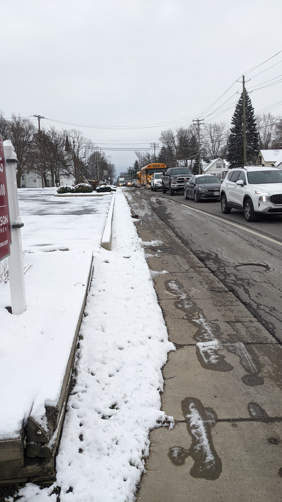

Tim Hortons at Main & Harris Hill: Community Concerns
Neighborhood Impact and Safety Issues
The proposed Tim Hortons location at 8503 Main Street, at the corner of Main and Harris Hill, raises significant concerns for our community. This is not just about another coffee shop; it's about the profound impact on an already strained intersection and the safety of our residents, especially children.
-
The Main and Harris Hill intersection is a hazardous 5-point configuration, already problematic for both state and county authorities due to existing traffic congestion.
An example of existing traffic hazards in the area.
-
Its immediate proximity to three churches and two schools means it's an exceptionally active area with constant pedestrian and vehicle traffic.

School pickup traffic extending into the road, highlighting existing congestion near schools.
-
Alarmingly, the sidewalks at this intersection are frequently driven on by vehicles, creating dangerous conditions. There have been multiple documented instances where children, even with a dedicated crossing guard present, have been nearly struck by cars navigating this unsafe intersection.

Example of traffic hazards: A driver going the wrong way on Nottingham Terrace, a one-way street near the intersection.

Sidewalks with no curbs, making it easy for vehicles to drive onto them.
Evidence of vehicles driving on sidewalks during winter conditions.
Further evidence of vehicles driving on sidewalks during winter conditions.
Additional visual proof of vehicles driving on sidewalks during winter conditions.
- A traffic study for this proposed Tim Hortons projects a substantial increase of 114 vehicle trips entering and exiting the site (Clarence Planning Board Minutes, 10/16/24). This additional volume will exacerbate an already critical traffic and safety situation.
Existing Coffee Shop Locations Nearby:
There are already numerous coffee shop locations within a short distance of the proposed site, questioning the need for another one that will further burden local traffic and infrastructure. Nearby locations, ordered by approximate driving distance from 8503 Main Street, include:
- Tim Hortons (5390 Genesee St, Lancaster, NY): Approximately 1.4 miles (3 min drive).
- Tim Hortons (9220 Main Street, Clarence, NY): Approximately 1.6 miles (3 min drive).
- Prominent Coffee Co. (9135 Sheridan Drive, Clarence, NY): Approximately 1.8 miles (3 min drive).
- Goodrich Coffee & Tea (9450 Main Street, Clarence, NY): Approximately 2.1 miles (5 min drive).
- Starbucks (9430 Main St, Clarence, NY): Approximately 2.1 miles (7 min drive).
- Great Lakes Coffee Roasters (9560 Main Street, Clarence, NY): Approximately 2.3 miles (5 min drive).
- Tim Hortons (6687 Transit Road, Williamsville, NY): Approximately 2.3-2.5 miles (6-8 min drive).
- Tim Hortons (7860 Transit Road, Williamsville, NY): Approximately 2.3-2.5 miles (6 min drive).
- Tim Hortons (5140 Main Street, Williamsville, NY): Approximately 4.4 miles (11-12 min drive).
- Tim Hortons (1060 Wehrle Drive, Williamsville, NY): Approximately 4.5-4.6 miles (10-11 min drive).
This density of existing coffee shops suggests that the community's demand is already well-met, and adding another at such a critical intersection is unnecessary and detrimental.
Councilman Casilio's Inconsistent Stance
A disturbing element in this discussion is the apparent inconsistency in Councilman Casilio's position on such developments.
- In 2014, Councilman Casilio vocally opposed a similar Tim Hortons proposal at 8250 Main Street (approximately 0.2 miles from his residence). He explicitly voiced concerns that "60 customers or more" would cause a "traffic jam" on Westwood Road (Clarence Town Board Minutes, 05/14/14).
- The current proposal at 8503 Main Street projects almost double that traffic (114 vehicle trips), at an intersection far more dangerous and congested than the site he previously opposed. Yet, there seems to be less opposition from him on this significantly higher-impact project.
- Adding to the irony, Councilman Casilio has stated, "The Town of Clarence is not in the development business... that area is zoned for a coffee shop. The owner... has a right to ask to open up a coffee business there." This statement contrasts with the fact that he himself owns CasilioCo.com, a property development company.
This inconsistency undermines public trust. It is precisely the job of elected representatives to advocate for their constituents, ensure that laws and zoning benefit the community, and to initiate or support changes to regulations when existing rules lead to detrimental outcomes like this. Our elected officials must demonstrate transparency, accountability, and consistent leadership, applying the same standards across all community areas.